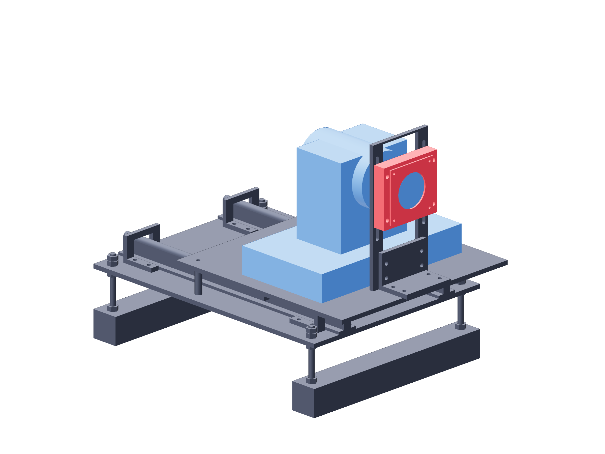

Dry commissioning / camera format166 / 179
Measure the native capture format
The format report is observed on this Mac with these cameras. Manufacturer resolution claims do not fill the measured-format receipt.

- Grant GPOCapture camera access when macOS requests it during this first capture.
- Use the actual directory printed by capture for SESSION_DIR. Cover B's lens briefly to confirm its recorded frames are the B view.
- Copy each report's verified_format block into its camera entry, including measured time/source.
- Inspect both wire endpoint/dot/seam views at the recorded native mode before optical calibration.
$GP_PY $GP_OBS/observe.py capture --config "$GP_SETUP/cameras.json" --root ~/gpo-sessions --label format-check --seconds 10 --every-n 100 $GP_PY $GP_OBS/observe.py format-report SESSION_DIR
Ready when
Both identities match their images and verified_format records the actual native 3840 × 2160 mode required by the supplied measurement configuration. A different format or swapped view fails that configuration. Diagnose capture/cable/mode support; never substitute a manual specification for the measured receipt.